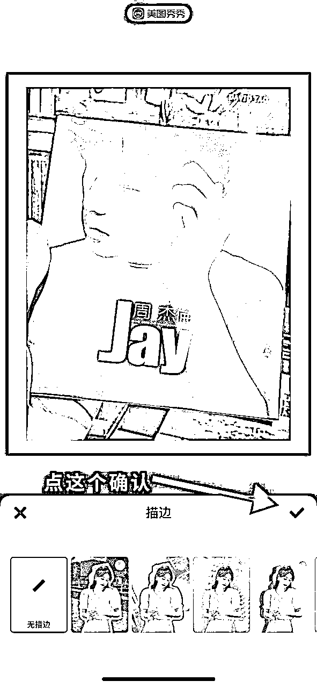

来源：https://nivut760ftk.feishu.cn/docx/T749dG9dYovR35x0MA3cnpR5nKc
大家好，我叫艾小飞，擅长小红书引流，最近很多做小红书的圈友呢，都会遇到一个很头疼又难解决的问题，那就是账号没流量！更不知道为啥没流量！这才是最大的问题
没流量，就意味着自己想要推广的东西，不能在短时间内得到变现。
我也看到其它平台上，很多分享小红书没流量原因的文章，大多数都是讲些大道理和空话，真正能实操的价值很低，学了之后不知道要该从何下手，让人越看越焦虑...
那么今天通过我的经验和实操教程，希望能给你解决掉这个头疼很久的问题，看完后你还可以照抄去做的那种，很有价值
在分享这之前，我想问问大家，你们认为小红书的流量，是因为哪些关键因素所决定的？我分别给你四个选项，你暂停10秒思考下
1.封面？
2.标题？
3.正文？
4.话题？
OK时间到，如果经常玩小红书的，可能会选1和2，对小红书还不是很了解的，可能就不知道该选哪个了，对吧
这时你可能会好奇了，为什么封面和标题是决定流量的关键因素呢？
因为小红书它的浏览页面是瀑布式滑动的，从下往上滑
也就是说，你正常浏览整排的笔记页面，在你面前所展示的只有四条笔记
而这四条笔记当中，哪条笔记的封面或标题，能瞬间抓住你注意力并点击进去互动了，那谁就能在平台赛马机制当中脱颖而出，从而获得平台更多的推荐流量
不像抖音那样流动式的页面，下个短视频是什么内容，你是不知道也看不到的，所以抖音的视频开头前5秒，就非常的关键了，而封面似乎就不是那么的重要
因为在小红书上大多数都是图文，用户第一眼看到的，肯定先是你的封面标题，所以封面和标题，是决定了笔记流量的关键因素
OK，那么说完了封面和标题在小红书上的重要性，现在来说说，为什么很多人找不出账号流量低的原因呢
在这里我先抛开运营技巧的层面，先来说说思维层面
如果你底层逻辑的方向一开始就错了，哪怕再有运营技巧，也只是在沙滩上盖高楼，底子不稳容易塌
为什么这么说呢？
因为大多数博主去制作封面标题的时候，都会从自己的角度来展开设计的，花了好几个小时好不容易做出来的封面标题后，自我认为质量都那么好了，肯定会得到很多流量的
当发布一看数据后，流量低得不到用户的喜欢，从而陷入了自我怀疑的漩涡中，这就是我们常说的“自嗨思维”
包括我也一样，时常会因为自嗨的去创作内容，本带着很高的期望，发布后数据却不尽人意，就容易产生自我怀疑和内耗中
不过幸运的是，自从我用了一个小技巧后，我发现小红书流量不但增长快，还能运用到生活中的方方面面
这个技巧是什么呢？
简单来说就是把自己的封面，P图在小红书浏览页面上，开启用户视角，看自己会更喜欢哪篇笔记，如果没有自己的那篇，那就继续优化修改
可能你还不理解是什么意思，没关系。我现在给你画张图
如果不明白其中的意思，我会用文字来给你讲解下这个流程怎么做
（如果你旁边有台多余的手机，也可以跟着我的步骤来实操）
首先打开小红书页面，随机截屏一张下来，比如像这样
截取好之后，打开美图秀秀
用下边的这个清除笔功能

把其中一篇你认为没什么吸引力的标题给抹掉
然后点击这里的贴纸功能
在相册中找到你之前制作好的封面
ps：为了给你看实操案例，我就随便在相册选一张吧...

然后覆盖到你认为没什么吸引力的笔记上

覆盖完成
然后再通过美图秀秀的文字功能
把你的标题给打上
我写的是：“用一句歌词表明你是周杰伦老粉！！！”
ps：为了让你们理解这流程，标题是随便编的
好了，这样的操作流程就完成了
操作完成后，接下来你试想下，当你在小红书浏览笔记时，正好滑到下面这张图所展示到的页面

抛开偏见，如果你是个纯路人，你第一反应是先想看哪篇笔记？四选一：
是左上1，还是右上2？
是左下1，还是右下2？
好，当你心中有了答案后，在回头看看自己的那篇笔记，你有没有想点击进去看看的欲望？其实这时候你心中的答案已经很明显了
如果你自己在这四条笔记中，连你自己的笔记都不想点击看，更何况你给用户看呢？对吧。
所以这个方法非常的简单，而且也能快速的知道自己笔记没流量的原因在哪了，也清楚自己要从哪开始优化了
那这个时候你可能会问，我没有这种用户思维，该怎么办呢？
这个问题问得好，相信很多人再怎么绞尽脑汁，都很难做到马上站在用户的角度，来看待自己问题的，没关系，我还有另外一种技巧，可以解决你这个痛苦的问题。教你个懒人法
怎么操作呢？
你把刚制作好模拟小红书浏览页面的图，通过笔记发布出去，让客户来给你做选择
我也画个图，方便你们理解更快
具体怎么做？很简单的，标题写上“极限四选一，你会选哪个”
然后正文写“求求姐妹们，快帮我看看哪篇笔记，更能吸引你！”
然后就填上话题，“极限四选一”“帮忙选一选”

然后就发布出去等他们评论
这就是借助客户的数据反馈，来测试你的笔记到底有没有吸引力，如果你发第一篇没人来评论，没关系。这很正常的，你可以每隔1小时持续的发五篇以上，直到有人给你数据反馈为止
这就是个很好的站在用户的角度，来测试你封面标题是否受欢迎的思路，从而可以继续优化，能得到更多人的喜欢
如果连客户都不喜欢你的封面标题，那这个时候，你就要想办法再去优化优化了
其实这个方法不单单是可用在小红书平台上，也可以用在生活中的很多方面
我再给你举个例子啊，就比如你的朋友圈，最近一直都没人给你点赞对吧
你想知道是怎么回事，那这个时候，你就可以借用我刚刚的那个方法，用美图秀秀的P图功能，把你此时的朋友圈页面截图
随机选一个，P上你自己之前发过的朋友圈图片和标题
我就拿我这条朋友圈来给你们实操看看
制作好之后是这样的
当你制作好图片之后，思考下如果你微信里有人这样发朋友圈，你看到后第一反应，有想点赞的欲望吗？有想跟他互动吗？会买他的产品吗？
自问三个问题后，你就能清楚的知道，为什么别人不会来跟你朋友圈互动了
ps：刚制作完我的那条朋友圈对比后，我也知道为什么没人给我点赞了🥹
如果你没有这种用户思维去思考问题，没关系，还是可以按照刚刚那个懒人法去实操
你可以注册一个小红书新号，放上你朋友圈P好的截图，然后标题写上：“如果你朋友圈有人这么发，你会给他点赞吗？”
每相隔一小时连续多发几次，看看小红书用户的反应是什么样的
如果每个人都评论：“不会”，“不”，“我会删了”，那么说明你的朋友圈封面和标题，他们不感兴趣，甚至是反感的，这个时候你就要想办法再去优化优化了
别人的评论，就像是一面镜子，时不时拿出来照照，才会进步更快
也跟你们说个我的故事吧，就像以前我喜欢在朋友圈，发一些学员付款的聊天记录，希望通过真实案例反馈，让更多人来跟我学东西
但发得多了后，我发现怎么都没有人给我点赞？也不见有什么评论的，难道是他们不喜欢？？？
我觉得这样下去不行，肯定是有原因的。于是我套用了这个方法后，反过来看看自己的朋友圈才发现，原来连我自己都讨厌有这样的朋友发这种内容，更何况是我微信里的朋友们了。所以也能理解，为什么没人给我点赞了，也理解为什么有些人把我屏蔽了....
虽然我也是做教育的，但从那个时候开始，我朋友圈也不会再发那种付款记录的截图了，很容易让人反感的。
现在大多数都是发一些生活和创业上的思考，这样他们也喜欢看，也得到了很多的互动，从而提升了好感度，微信被删率也从之前的5%降到现在不到0.1%，这个方法对于我来说，好处还是挺多的
其实你可以按照我刚刚分享的这个思路，去应用到生活中的方方面面，它不限于小红书，更不限于朋友圈，思路它是可以灵活多变的
但只要记住一点，做任何的事情，一定不能有自嗨的思维，特别是做产品的，这一点真的很重要！
就像当初小米创始人雷军的创业故事中说的那样：“当初我在金山软件工作时，每来一个客户，我都会滔滔不绝的跟他讲，这个产品的经历过程。但客户都不买账！苦恼这个问题了很久”
“于是有一天想去实体店体验销售员是怎么卖东西的，跟着销冠一天后，才发现原来我们认为好的东西，客户不一定认为好，只有客户觉得好，那才是真的好！”
雷军直到后来创办小米手机时，把用户思维发挥到了极致，还创建了论坛给客户吐槽自己的产品，雷军每天都会看看客户都是怎么评价自己产品的
而且还通过客户的各种评价反馈，慢慢挖掘出超多的细分需求，从而让小米手机公司，在竞争激烈的手机市场中，拼出一条属于自己的路来。这就是雷军给到我们的启发！用户思维要放到生活的方方面面中
虽然说，今天的主题写的是小红书流量的话题，但更多我想传达的是，希望大家往后不管是做什么产品，不要带有自嗨思维，多去换个角度思考，可能得到的效果就不一样了
体验用户的体验，才能做出更好的产品和服务！
好啦，今天我的分享就到这里了，如果觉得有价值，记得点个赞，谢谢大家，我叫艾小飞。
原创：艾小飞
转载可私信
禁止搬运和抄袭
微信：aifei9977 （记得备注来意）